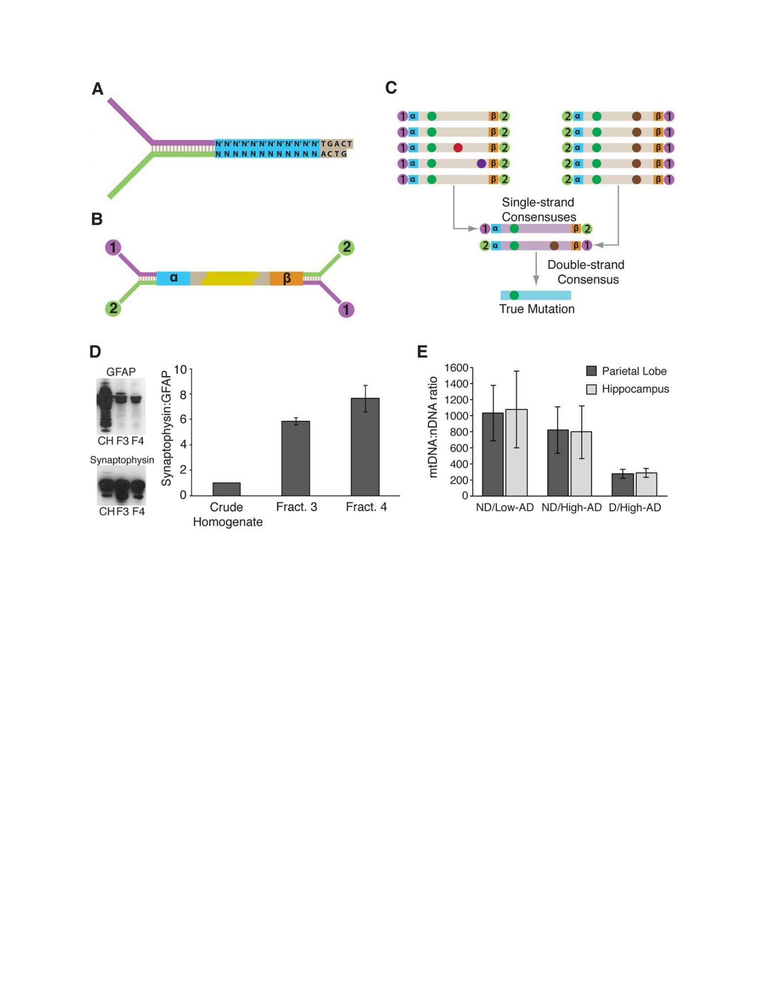
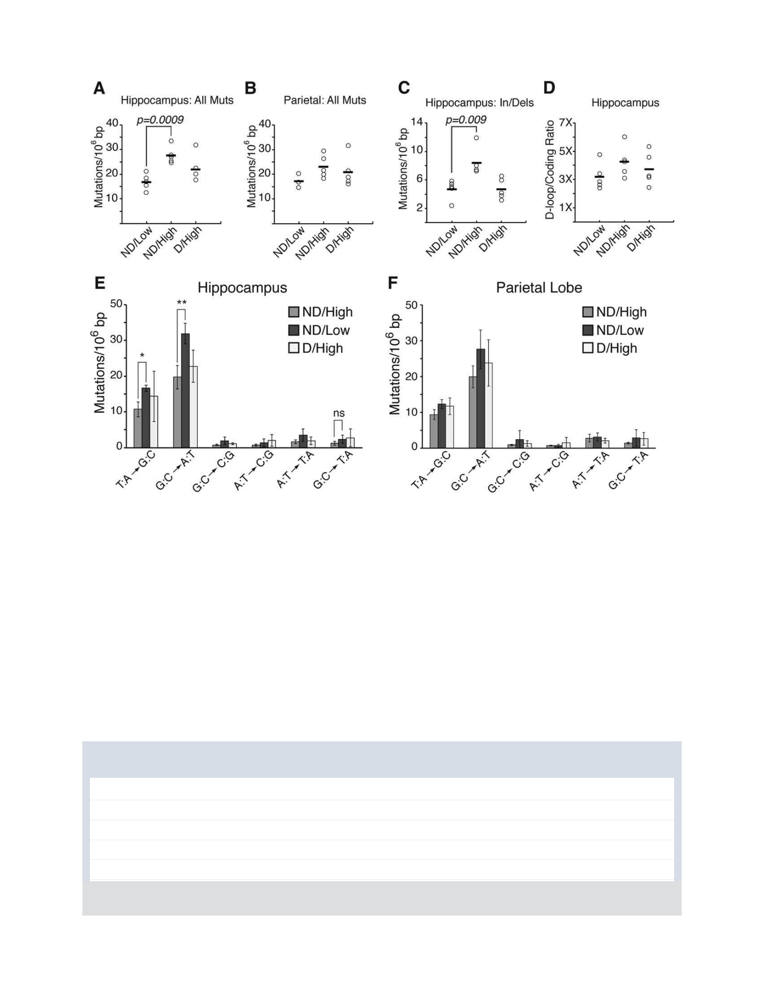

BRIEF COMMUNICATION
Mitochondrial DNA Mutations
Increase in Early Stage
Alzheimer Disease and Are
Inconsistent with Oxidative
Damage
, PhD,
1
, BS,
1
, MD, PhD,
2
and
, PhD
1
Mitochondrial dysfunction and oxidative damage are
commonly associated with early stage Alzheimer dis-
ease (AD). The accumulation of somatic mutations in
mitochondrial DNA (mtDNA) has been hypothesized to
be a driver of these phenotypes, but the detection of
increased mutation loads has been difficult due to a
lack of sensitive methods. We used an ultrasensitive
next generation sequencing technique to measure the
mutation load of the entire mitochondrial genome.
Here, we report a significant increase in the mtDNA
mutation frequency in the hippocampus of early stage
AD, with the cause of these mutations being consis-
tent with replication errors and not oxidative damage.
ANN NEUROL 2016;80:301–306
S
omatic (noninherited) mitochondria l DNA (mtDNA)
mutations and mitochondrial dysfunction are thought
to be important drivers of aging and age-related neurode-
generative diseases such as Alzheimer disease (AD) and
Parkinson disease (PD), where mtDNA mutation
accumulation may precede the appearance of clinical
symptoms.
1
Mutations in mtDNA, whether through
inheritance or somatic accumulation, can compromise
mitochondria l function and result in cell death and dis-
ease.
2,3
Previous studies investigating the contributions of
mtDNA mutations in AD have failed to consistently
identify associations between AD and mutations.
4,5
Such
inconsistencies likely stem from 3 main causes: (1) the
inclusion of only samples from patients with late stage
AD, wherein only the healthiest cells with the lowest
mutation loads likely remain; (2) the examination of rela-
tively small regions in mtDNA; and (3) the use of poly-
merase chain reaction (PCR) amplification techniques
that result in higher error rates due to misincorporation
events by DNA polymerase.
To overcome these issues, we examined point muta-
tions and small insertions/deletions across the entire
mitochondria l genome purified from the hippocampus
and parietal lobe of AD, early stage AD, and healthy
control patients using duplex sequencing (DS). DS is a
highly accurate next generation sequencing (NGS) meth-
odology that relies on molecular barcoding and sequenc-
ing of both strands of a double-stranded DNA molecule
to eliminate both sequencer- and PCR-derived errors,
thus allowing for the detection of a single mutation in
>10
7
wild-type nucleo tides (Fig 1A–C).
6,7
Materials and Methods
Human Brain Samples
Flash frozen brain tissue was obtained from the Neuropathology
Core of the University of Washington Alzheimer’s Disease
Research Center (Seattle, WA). All clinical information and con-
sent were obtained according to protocols approved by the Uni-
versity of Washington Institutional Review Board (IRB#24250).
Cases were grouped using 2 criteria: last clinical diagnosis of no
dementia (ND, within 2 years of death) or dementia (D) accord-
ing to criteria from the Diagnostic and Statistical Manual of Men-
tal Disorders, 4th edition and pathologic classification for AD by
Braak staging
8
; cases with any other neuropathologic diagnosis,
gross infarcts/hemorrhages, Lewy bodies, or ischemic injury were
excluded. We stratified cases into 3 groups: no dementia and
Braak none, I, or II (ND/Low-AD); no dementia and Braak III,
IV (ND/High-AD); and AD dementia with Braak stage V or VI
(D/High-AD; Table, Supplementary Table 1).
Isolation of Synaptosomes and mtDNA
from Human Brain Tissue
In an effort to enrich for mtDNA from neurons, we isolated
synaptosomes from 100 to 200mg of tissue from each case
using a previously established protocol.
9
Purity of the resulting
synaptosome fraction was evaluated by Western blot analysis
using antibodies against glial fibrillary acidic protein (Dako,
Carpinteria, CA) and synaptophysin (Dako; see Fig 1D). DNA
was extracted from the synaptosome pellet using the QIAamp
DNA Micro kit (Qiagen, Valencia, CA), following instructions
From the
1
Department of Pathology, University of Washington, Seattle,
WA; and
2
Department of Pathology, Stanford University, Palo Alto, CA.
Address correspondence to Dr Kennedy, HSB E506, Box 357470, 1959
NE Pacific St, Seattle, WA 98195. E-mail: scottrk@uw.edu
Additional supporting information can be found in the online version of
this article
Received Mar 8, 2016, and in revised form Jun 13, 2016. Accepted for
publication Jun 15, 2016.
View this article online at wileyonlinelibrary.com. DOI: 10.1002/ana.
24709
V
C
2016 American Neurological Association 301
for tissue isolation. The relative purity of each mtDNA prepara-
tion was determined by quantitative PCR (qPCR) using the
following primers sets: nuclear primers: forward, 5
0
GGGCACT
GATCTACACAGTAAG3
0
; reverse, 5
0
TAGTAAGCGCTCAGC
AAAGG3
0
; mitochondrial primers; forward, 5
0
CCTCAACAG
TTAAATCAACAA3
0
; reverse, 5
0
GCGCTTACTTTGTAGCCT
TCA3
0
.
mtDNA Duplex Sequencing and Data Analysis
Duplex tag-labeled adapter synthesis and DNA shearing were
performed as previously described.
7,10
Briefly, adapters (see Fig
1A) were ligated to sheared DNA using NEBNext Ultra End
Repair/dA-Tailing and Ligation modules (New England BioLabs,
Ipswich, MA) according to the manufacturer’s instructions.
Approximately 1 3 10
6
copies of adapter ligated mtDNA (deter-
mined by qPCR) were PCR amplified using KAPA HiFi DNA
polymerase (Kapa Biosystems, Wilmington, MA). The DNA was
then used in targeted capture using IDT xGen Lockdown probes
(Integrated DNA Technologies, Coralville, IA) specific for human
mtDNA following the manufacturer’s instructions. The resulting
libraries were sequenced using 101–base pair (bp) paired-end
reads on an Illumina (San Diego, CA) HiSeq 2500.
The raw sequencing data were processed as previously
described.
10
A minimum of 1 3 10
6
postprocessing bases were
required for each sample. To quantify the frequency of de novo
events, we used a clonality cutoff excluding any positions with
variants occurring at a heteroplasmic level of >1% or a depth
of <1003, and scored each type of mutation only once at each
genome position (Supplementary Table 2).
Statistics
Statistical significance of mutation frequencies between each
disease group and control patients was assessed using an unpaired
t test. To adjust for 3 pairwise comparisons (ND/High-AD vs
ND/Low-AD, ND/High-AD vs D/High-AD, and ND/Low-AD
vs D/High-AD), Bonferroni correction was applied and signifi-
cance was set at p 5 0.017.
Results
Tissue from the hippocampus and parietal lobe were
obtained for controls (ND/Low -AD), patients with AD
dementia (D/H igh-AD), and ind ividual s wh o were no t
demented, but had high Braak staging characteristic of AD
dementia (ND/High-AD; see S upplementary Table 1). This
last group does not have neuronal loss; subjects are cogni-
tively normal, but are thought to be at risk of developing
AD dementia, thus representing an early stage of AD.
11
Purification of total DNA from bulk brain tissue
indicated a significantly reduced amount of mtDNA in
the D/High-AD group relative to both the ND/Low-AD
and the ND/High-AD groups (see Fig 1E), consistent
with previous studies showing a reduction in mtDNA
amounts in cerebrospinal fluid.
12
As AD primarily affects
neurons, we next sought to measure the mutation
frequency of neuronally derived mtDNA by isolating
hippocampal synaptosomes via a Percoll step-gradient
centrifugation strategy and then assessing the somatic
mtDNA mutation frequency using DS. The mutation
frequency of mtDNA from ND/Low-AD control hippo-
campal samples was 1.69 6 0.32 3 10
25
, in close agree-
ment with previous reports,
6
whereas the mutation
frequency of ND/High-AD samples exhibited a 60%
increase (2.77 6 0.35 3 10
25
, p 5 0.0009; Fig 2A). No
significant increase was detected in D/High-AD cases, or
other br ain regions (see Fig 2A, B). Small insertion/dele-
tions (<5bp) were slightly increased in the hippocampus
of the ND/High-AD group (see Fig 2C, p 5 0.009), but
not the D/High-AD group. In assessing differences
between the characteristics of the groups, no signific ant
differences were observed between postmortem intervals
of any group (see Table). When considering age, the
D/High-AD group was significantly younger than the
ND/High-AD group (p 5 0.017, Student t test), and
trended lower than the ND/Low-AD controls (p 5 0.032,
Student t test). However, age did not significantly correlate
with mutation frequency in either the hippocampus
(r
2
5 0.018, df 5 13, p 5 0.64, Pearson correlation) or
parietal lobe (r
2
5 0.053, df 5 11, p 5 0.44, Pearson
correlation), indicating that the lower sample age in the
D/H igh-AD samples is unlikely to account for the reduced
mutation frequency observed in that sample group.
Oxidative damage to mtDNA has been reported to
be increased in several stages related to AD dementia.
13–15
The most frequent DNA alteration produced by oxidative
damage is 8-hydrox y-2
0
-deoxyguanosine, which, when cop-
ied past during replication or repair, yields G!T/C!A
transversions.
16
Surprisingly, we found no significant
increase in this mutation subtype in the hippocampus or
the parietal lobe of any sample group (see Fig 2E, F), sug-
gesting that regional differences in the brain may not
account for our observations. Instead, T!C/A!Gand
G!A/C!T transitions were the most common mutation
subtypes observed in all samples, with these subtypes being
increased in the ND/High-AD sample group (see Fig 2E,
F). These findings are consistent with recent reports show-
ing that transitions and not oxidative damage–associated
G!T/C!A mutations increase in brain tissue with
age.
6,17
The occurrence of mutations were dispersed
throughout the genome, with a 3- to 4-fold elevation
in the mutation load in the regulator D-loop (see Fig
2D; positions: 1–576; 16,024–16,569) compared to the
coding regions (positions: 577–16,023), consistent with
previous work.
6
However, comparison of the relative
increase in the mutation frequency of the D-loop versus
the coding region of the ND/Low-AD and ND/High-
AD groups shows no significant change in the
ANNALS of Neurology
302 Volume 80, No. 2

distribution of mutations between these 2 mtDNA
regions (see Fig 2D), indicating that mutation accumula-
tion does not occur to a different extent in the D-loop
compared to the genome’s coding region.
Discussion
Utilizing a highly sensitive NGS technique that elimi-
nates sequencing errors associated with PCR and DNA
damage, we have measured the mutation frequency of
neuronally enriched mtDNA from pat ients with varying
stages of AD pathology at sensitivities previously
unachievable. Compared to controls, the mtDNA point
mutation frequency is significantly elevated in the hippo-
campus of patients with early stage AD, but not in
patients with pathologically confirmed AD dementia,
suggestin g that mutated mtDNA may be lost as neuro ns
FIGURE 1: Overview of Duplex Sequencing and sample purity. (A) Duplex Sequencing uses a modified form of the Illumina TruSeq
adapter design containing a unique complementary random sequence. (B) Ligation of the adapters to sheared DNA (yellow) gener-
ates unique tags on each end (a and b), such that each molecule has a different tag combination. Reads derived from the read 1
and read 2 synthesis reactions of a paired-end run are denoted in purple and green, respectively. (C) Polymerase chain reaction
(PCR) amplification of the 2 strands produces 2 related, but distinct products. Sequence reads sharing the same a and b combina-
tion and the same sequencing reaction (ie, read 1 or read 2) are grouped into “families A consensus sequence for each family is
then calculated to form a “single-strand consensus” sequence (SSCS) using a simple majority rules consensus caller. Putative
mutations are of 3 different types: sequencing mistakes or late arising PCR errors (red and purple spots); first round PCR errors
(brown spots); and true mutations (green spots). Formation of the SSCS removes sequencer mistakes and late arising PCR errors,
but is unable to remove first round PCR errors. Comparison of the SSCS with appropriately oriented a and b tags derived from the
complementary strands of the original double-stranded DNA generates a double-strand consensus. Figure is adapted from Kenne-
dy et al.
6
(D) Synaptosome fractionation increases the purity of neuronally derived mitochondria. Synaptosomes were purified
from crude homogenized brain tissue using a Percoll step gradient fractionation protocol provided by Dunkley et al.
9
Only Percoll
fraction 4 was used for sequencing due to a significant enrichment in mitochondrial DNA (mtDNA) being found in this fraction.
Panel includes representative Western blots of glial fibrillary acidic protein (GFAP; top) and synaptophysin (bottom), as well as the
quantification of the Western blots for normal hippocampus. CH 5 crude homogenate, F3 5 Percoll fraction 3, F4 5 Percoll fraction
4. (E) Reduced mtDNA content in dementia D/High-AD sample group in both the hippocampus and parietal lobe. Only D/High-AD
shows a reduced amount of mtDNA, suggesting that a significant portion of mitochondria are no longer present in advanced
dementia. Error bars indicate 1 standard deviation. ND 5 no dementia.
Hoekstra et al: Mitochondrial Mutations in AD
August 2016 303

die and the disease progresses. This idea is consistent with
our observation that the mtDNA:nDNA ratio is dramati-
cally reduced in our D/High-AD samples (see Fig 1E).
Oxidative stress is prevalent in AD and has been
hypothesized to be a driving force behind the onset and pro-
gression of the disease. Although elevated oxidative damage
TABLE. Sample Characteristics
Disease State ND/Low-AD ND/High-AD D/High-AD
Age, yr, mean 6 SD 85.8 6 4.76 88.8 6 5.76 69.2 6 13.5
Sex, M/F 1/4 4/1 2/3
PMI, h, mean 6 SD 6.03 6 2.30 4.92 6 1.59 5.33 6 1.33
Age at onset, yr, mean 6 SD N/A N/A 60.6 6 10.64
Disease duration, yr, mean 6 SD N/A N/A 8.6 6 3.91
D 5 dementia; F 5 female; M 5 male; N/A 5 not applicable; ND 5 no dementia; PMI 5 postmortem interval; SD 5 standard
deviation.
FIGURE 2: Somatic mitochondrial DNA (mtDNA) mutation levels in no dementia (ND)/low Alzheimer disease (AD) controls (ND/
Low-AD), early stage AD (ND/High-AD), and Alzheimer dementia (D/High-AD). mtDNA was extracted from synaptosomes puri-
fied by ultracentrifugation with a Percoll gradient. The DNA was then sequenced using Duplex Sequencing, as previously
described.
10
(A) Overall somatic point mutation frequency in hippocampus. The thick black bars indicate the mean. (B) Overall
somatic point mutation frequency in parietal lobe. (C) Overall somatic frequency of insertions and deletions (In/Dels) in the hip-
pocampus. (D) The D-loop harbors 4 3 more mutations than the coding regions of the mtDNA, but the ratio is unchanged
between the normal and disease states. (E) Mutation spectrum reveals a predominance of T:AfiG:C and G:CfiA:T transitions
that are elevated in ND/High-AD, but not D/High-AD. G:CfiT:A transversions are in low abundance and are unchanged with
respect to disease state. *p 5 0.0004; **p 5 0.0002; ns 5 not significant. Error bars denote 1 standard deviation. (F) Mutation
spectrum for the parietal lobe reveals that transition mutations are the predominant mutation type.
ANNALS of Neurology
304 Volume 80, No. 2
to mtDNA is a feature of AD and is observed at several
stages that precede clinical presentation,
13–15
we did not
observe an elevation in G!T/C!A mutations, a canonical
signature of oxidative damage to DNA. Instead, we note an
increase in transitions, which primarily result from nucleo-
tide deamination or nucleotide misincorporation by DNA
polymerase c during mtDNA replication.
18,19
Interestingly,
deficiencies in replication fidelity and impaired removal of
defective mitochondria, have been reported in AD, suggest-
ing a potential origin for the increase in mtDNA mutation
load.
20,21
Our findings are in contrast to previous studies in
early PD and incidental Lewy body disease that repor t a
large increase in G!T/C!A mutations.
23
This striking
contrast points to an underlying difference in the etiolo-
gies of AD and PD and suggests that, unlike early PD,
mitochondria lly localized oxidative stress may not be an
early contributor to AD. Alternatively, the discordance
between our findings and earlier reports could be
explained by their use of PCR-based assays, which can
lead to erroneous misincorporation eve nts, to quantify
mutations. Consistent with this possibility is that the
mutation frequencies we report here are 10-fold lower
than those reported in these studies,
5,23
and are in closer
agreement with previous studies in humans.
6
Our data suggest that mtDNA mutations either con-
tribute to the onset of AD or indicate an early change in
neuronal mitochondria of AD patients. The similarity of
the mutation spectra between the different sample groups
suggests a similar mutagenic process, which may represent
an “enhanced aging” phenotype in patients with AD
pathology. Taken together, our findings may prove useful
in the future as a potential biomarker and suggest a
potential therapeutic strategy that prevents and/or targets
the accumulation of mtDNA mutations in AD.
Acknowledgment
This research was supported by the University of Wash-
ington Alzheimer’s Disease Research Center (NIH
P50AG05136) and a Genetic Approaches to Aging
Training Grant (NIH National Institute on Aging T32-
AG000057, S.R.K.). The funders had no role in study
design, data collection and analysis, decision to publish,
or preparation of the manuscript.
We thank Drs L. Loeb and A. Herr for their critical
review of the manuscript.
Author Contributions
S.R.K., T.J.M., and J.G.H. conceived and designed the
project. S.R.K., J.G.H., and M.J.H. collected, analyzed,
and interpreted data. S.R.K. and J.G.H. wrote the paper.
Potential Conflicts of Interest
Nothing to report.
References
1. Kennedy SR, Loeb LA, Herr AJ. Somatic mutations in aging,
cancer and neurodegeneration. Mech Ageing Dev 2012;133:118–
126.
2. Hayashi J, Ohta S, Kikuchi A, et al. Introduction of disease- related
mitochondrial DNA deletions into HeLa cells lacking mitochondrial
DNA results in mitochondrial dysfunction. Proc Natl Acad Sci U S
A 1991;88:10614–10618.
3. Mashima Y, Saga M, Hiida Y, et al. Quantitative determination of
heteroplasmy in Leber’s hereditary optic neuropathy by single-
strand conformation polymorphism. Invest Ophthalmol Vis Sci
1995;36:1714–1720.
4. Coskun PE, Beal MF, Wallace DC. Alzheimer’s brains harbor
somatic mtDNA control-region mutations that suppress mitochon-
drial transcription and replication. Proc Natl Acad Sci U S A 2004;
101:10726–10731.
5. Lin MT, Simon DK, Ahn CH, et al. High aggregate burden of
somatic mtDNA point mutations in aging and Alzheimer’s disease
brain. Hum Mol Genet 2002;11:133–145.
6. Kennedy SR, Salk JJ, Schmitt MW, Loeb LA. Ultra-sensitive
sequencing reveals an age-related increase in somatic mitoc hon-
drial mutations that are inconsistent with oxidative damage. PLoS
Genet 2013;9:e1003794.
7. Schmitt MW, Kennedy SR, Salk JJ, et al. Detection of ultra-rare
mutations by next-generation sequencing. Proc Natl Acad Sci U S
A 2012;109:14508–14513.
8. Braak H, Braak E. Neuropathological stageing of Alzheimer-
related changes. Acta Neuropathol 1991;82:239–259.
9. Dunkley PR, Jarvie PE, Robinson PJ. A rapid Percoll gradient
procedure for preparation of synaptosomes. Nat Protoc 2008;3:
1718–1728.
10. Kennedy SR, Schmitt MW, Fox EJ, et al. Detecting ultralow-
frequency mutations by duplex sequencing. Nat Protoc 2014;9:
2586–2606.
11. Nelson PT, Braak H, Markes bery WR. Neuropathology and cogni-
tive impairment in Alzheim er disease: a complex but coherent
relationship. J Neuropath ol Exp Neurol 2009;68:1–14.
12. Podlesniy P, Figueiro-Silva J, Llado A, et al. Low cerebrospinal flu-
id concentration of mitochondrial DNA in preclinical Alzheimer
disease. Ann Neurol 2013;74:655–668.
13. Lovell MA, Soman S, Bradley MA. Oxidatively modified nucleic
acids in preclinical Alzheimer’s disease (PCAD) brain. Mech Age-
ing Dev 2011;132:443–448.
14. Wang J, Xiong S, Xie C, et al. Increased oxidative damage in
nuclear and mitochondrial DNA in Alzheimer’s disease.
J Neuroche m 2005;93:953–962.
15. Wang J, Markesbery WR, Lovell MA. Increased oxidative damage
in nuclear and mitochondrial DNA in mild cognitive impairment.
J Neuroche m 2006;96:825–832.
16. Cheng KC, Cahill DS, Kasai H, et al. 8-Hydroxyguanine, an abun-
dant form of oxidative DNA damage, causes G!T and A!C sub-
stitutions. J Biol Chem 1992;267:166–172.
17. Williams SL, Mash DC, Z
€
uchner S, Moraes CT. Somatic mtDNA
mutation spectra in the aging human putam en. PLoS Genet 2013;
9:e1003990.
18. Duncan BK, Miller JH. Mutagenic deamination of cytosine residues
in DNA. Nature 1980;287:560–561.
Hoekstra et al: Mitochondrial Mutations in AD
August 2016 305
19. Zheng W, Khrapko K, Coller HA, et al. Origins of human mito-
chondrial point mutations as DNA polymerase gamma-mediated
errors. Mutat Res 2006;599:11–20.
20. Alvarez V, Corao AI, Alonso-Montes C, et al. Mitochondrial tran-
scription factor A (TFAM) gene variation and risk of late-onset Alz-
heimer’s disease. J Alzheimers Dis 2008;13:275–280.
21. Wang X, Su B, Lee H, et al. Impaired balance of mitochondrial fis-
sion and fusion in Alzheimer’s disease. J Neurosci 2009;29:9090–
9103.
22. Lin MT, Cantuti-Castelvetri I, Zheng K, et al. Somatic mitoc hondri-
al DNA mutations in early Parkinson and incidental Lewy body dis-
ease. Ann Neurol 2012;71:850–854.
ANNALS of Neurology
306 Volume 80, No. 2
/
6